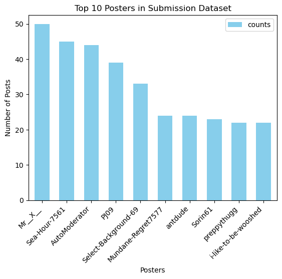
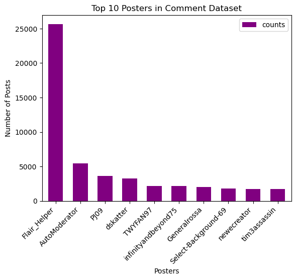
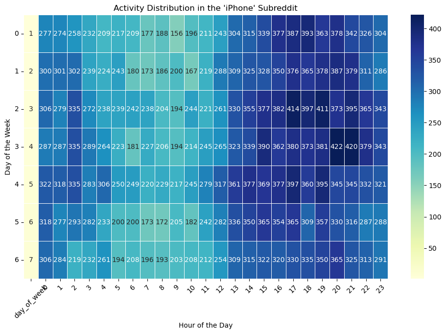
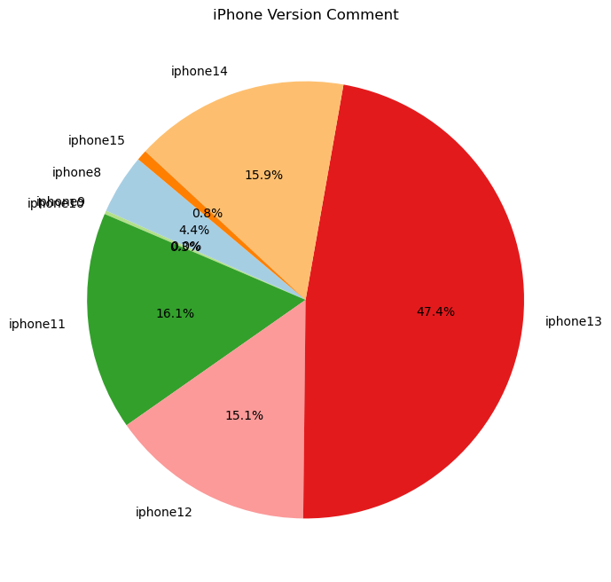
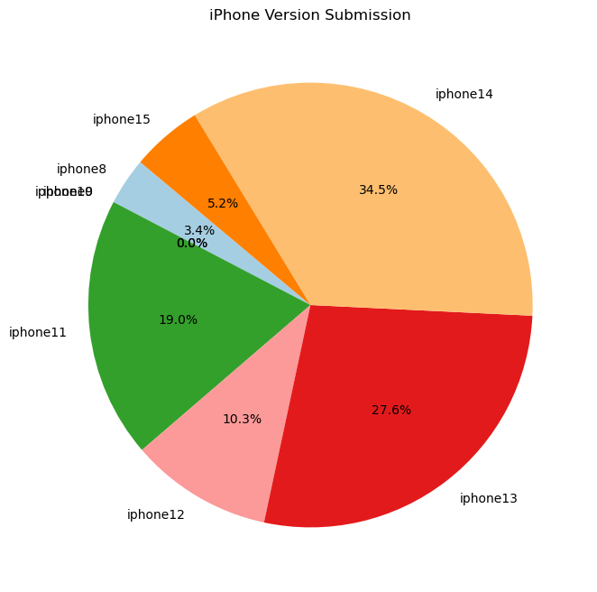

Exploratory Data Analysis
EDA 1
 Based on the Submission and Comment Dataset analysis in the "iPhone" subreddit, we observed that AutoModerator, PJ09, and Select-Background-69 are among the top 10 most frequent posters in both datasets. This indicates their relative enthusiasm and engagement with the "iPhone" topic within this subreddit. Consequently, these three individuals regularly contribute to both datasets, suggesting that their posts might offer valuable insights. However, further investigation is required to ascertain the quality of their contributions.
One approach is to filter their posts and examine the "score" column (number of upvotes minus number of downvotes) to gauge whether these individuals receive relatively high scores. Additionally, analyzing the comments on their posts using methods such as Natural Language Processing (NLP) or Machine Learning (ML) can offer insights into the sentiment—whether it is positive or negative. In essence, this research (two graphs) serves as a starting point, providing initial insights that can prompt further, more in-depth research.
Furthermore, we also observed that there is a significant difference in the number of posts between the two datasets. While it aligns with our expectations that the number of posts in the submission dataset is less than that in the comment dataset, the magnitude of difference between the quantities in both datasets is rather surprising.
EDA 2
The heatmap visualization provides a clear visual representation of activity levels throughout the week, with the intensity of the color corresponding to the level of activity. The darkest blocks, representing the highest activity.
Early Morning Hours (Midnight to 6 am): These hours consistently show the lightest color across all days of the week, indicating the lowest user activity. This is expected as it typically corresponds to nighttime or early morning in many parts of the world, when users are likely to be asleep.
Mid-Morning to Early Afternoon (10 am to 2 pm): There is a noticeable lighter coloration, although not as light as the early morning hours. This suggests moderate activity which might be because users are engaged in their daily work or school activities during these times.
We can see that from 3 pm to 10 pm every day, the color block is the darkest, indicating that user activity is the highest during this time period.
The data is concentrated from 3pm to 10pm from Monday to Friday. Surprisingly, user activity on weekends is not as good as on weekdays. This could indicate that the users are likely engaged in discussions or viewing content on the subreddit after typical work or school hours.
Weekends show a different pattern with slightly less intensity in color, indicating that the user activity is somewhat reduced compared to weekdays. Maybe people prefer to relax on weekends.
But in addition to time habits affecting user activity, there may also be the possibility of external factors, such as product release cycles, holidays, or major events.
For Reddit, activity patterns of user activity in the "iPhone" subreddit, get valuable insights into the day-to-day rhythms of the platform, which can help optimize content delivery and moderation schedules.
Example:
Improvement of the timetable: From 3 points in the morning to 10 points in the morning of the highest working day, it is possible to avoid important announcements, place books or official activities, and provide the highest level of visibility and participation.
Content management: During the peak period of active activity, it is possible to organize the content in advance, so that the Reddit sub-version remains high-quality and quantitative.
Periodic check: Under low flow conditions (for example, during the morning hours), the subreddit can be checked or updated, and at the same time, the maximum amount of ground can be reduced.
Advice and promotion: As a result, Reddit child version will promote the promotion, it can be avoided at the highest level, and the maximum amount of investment can be recovered.
Resource distribution: Distribution of human resource resources or accounting resources from the source of management and the ever-increasing amount of reciprocity.
EDA 3
 At the time of our data analysis, the latest iPhone version was the iPhone 15. Based on our findings, we speculate that there might be relatively lower enthusiasm or discussion around purchasing the iPhone 15 at present. This could be due to individuals still being in an observation phase or not being sufficiently familiar with this new product (as it was only announced in September 2023). It's also possible that people are waiting for year-end Black Friday or Christmas discounts before considering purchasing the iPhone 15. Moreover, Reddit users might be gradually decreasing, resulting in a lack of updates on the latest trends. Therefore, based on these considerations, the discussion volume regarding the iPhone 15 might be relatively low.
Furthermore, at the current point in time, the total discussion count for iPhone versions in the submission dataset is less than that in the comment dataset, which aligns with our expectations (generally, a topic has multiple comments). Additionally, according to the pie charts, we observed that although the discussion count for the iPhone 14 is the highest in the submission dataset, followed by the iPhone 13, in the comment dataset, the discussion around the iPhone 14 is significantly lower compared to the iPhone 13 and even less than the iPhone 11. This suggests that there might be more hesitancy around whether to purchase the iPhone 14. Users might still perceive the iPhone 13 to offer better value for money compared to the iPhone 14, hence the higher discussion in the submission dataset but lower discussion in the comment dataset. Of course, it's also possible that the opposite is true: the iPhone 13 could be performing exceptionally poorly, leading to a very high level of negative discussions. Surprisingly, the iPhone 11 still maintains substantial discussion volume in both the submission and comment datasets.
Overall, at this current point (with the iPhone 15 being the latest version, encompassing our entire dataset's time frame), iPhone versions 11 to 14 continue to maintain significant discussion levels. This may imply that these iPhone versions might be more favored among Reddit users. In contrast, the overall discussion volume for iPhone versions 8 to 10 remains low in both datasets.